|

AW Studios 1/350 Romulan Bird of Prey
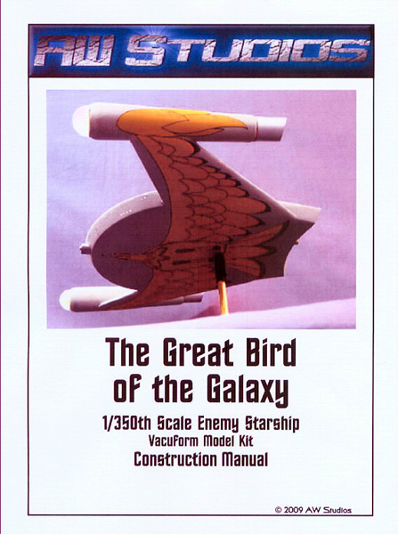
Kit #***
MSRP $140.00
Images and text Copyright © 2009 by Matt Swan
Developmental Background
The Romulan High Command commissioned the development of a small yet powerful raider type of spacecraft centered around two impressive technologies; an effective cloaking device and a nearly irresistible plasma cannon. The type was initially designated Bird of Prey and carried a large bird like design on the lower hull. Later this designation encompassed an entire classification of small raider type spacecraft. This type of vessel was first encountered in 2266 when a single raider crossed the Romulan Neutral Zone and totally destroyed several Federation Starfleet border outposts. In 2267 the type was encounter once again in greater numbers as the Romulans expanded their inventory and began to use the ships in groups to patrol the neutral zone. After the Romulan-Klingon Alliance of 2268 the Romulans acquired several D-7 class battle cruisers from the Klingon Empire as part of a technology exchange and began to develop tactics where the smaller Bird of Prey would support the more versatile battle cruisers.
Whereas the Bird of Prey did display several technological advances it also suffered from an Achilles heel, due to the massive power consumption of the main weapon the craft had to shut down its cloaking device prior to firing the weapon which would for a brief moment leave it vulnerable to attack. The large power requirements also severely limited the type’s effective range and combat duration. One other shortcoming of the type was an apparent inability to engage in combat while in warp mode, most likely also related to the power requirements. It was initially speculated that the original technology was stolen from the Federation. This was based on the similarity in design layout of the hull and warp nacelles but this speculation was never verified with any solid intelligence.
The Kit
The studio model of the Romulan BoP was created by Wah Ming Chang for the Star Trek Original Series ‘Balance of Terror’ episode. The type shows up once again in ‘The Deadly Years’ then drops from sight. I don’t believe that the studio model was available any longer during the filming of ‘The Deadly Years’ but that all the BoP footage was done from ‘stock shots’ taken during the ‘Balance of Terror’ filming. Keep in mind that while these two episodes may not have aired in this order they were filmed in this order. In 2008 the digitally remaster ‘Enterprise Incident’ had the Bird of Prey make an appearance but that was a computer generated image. Rumor was that the original Chang model was damaged or even destroyed in the late 1960s. In the early 1970s AMT began to market Star Trek plastic model kits and issued a single production run of the Romulan BoP. Sadly this kit suffered from several inaccuracies most noticeably the warp nacelle bussards and was of undetermined scale. The Enterprise and Klingon D-7 kits were reissued multiple times and ultimately the license was sold or leased to Round Two. The Bird of Prey was never reissued and as such, demands a very stiff price on the current model market.
Richard Long mastered a very nice resin model of the Bird in 2008 of which a copy was turned over to AW Studios where it was cut apart and used to create the vacuform masters that resulted in this kit. Whew, hell of a story, huh? So let’s talk about the kit, it arrives in a simple heavy duty cardboard box with no artwork, the kit box is the shipping container and includes an adequate amount of Styrofoam peanut pack to keep everything safe.
Inside we have a small collection of vacuformed parts done in heavy gauge white polystyrene along with a small zip-lock baggie containing the resin and poly detail pieces. 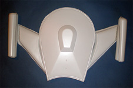 In the vacuform department we have the upper and lower hull pieces, wing halves and warp nacelle halves. The zip-lock bag contains two very nicely done clear resin bussards for the warp nacelles and a clear plasma weapon piece along with two detailed clear aft warp cell inserts. The upper hull fin is provided as a single white resin piece and the last detail parts are two pieces of PVC pipe cut to size for the ends of the warp nacelles. In the vacuform department we have the upper and lower hull pieces, wing halves and warp nacelle halves. The zip-lock bag contains two very nicely done clear resin bussards for the warp nacelles and a clear plasma weapon piece along with two detailed clear aft warp cell inserts. The upper hull fin is provided as a single white resin piece and the last detail parts are two pieces of PVC pipe cut to size for the ends of the warp nacelles.
Quality wise we are kind of hit and miss; the bussards are the most impressive pieces with not a single micro bubble and excellent clarity. It almost seems a shame to have to glaze these pieces to refract the internal lighting. The other clear pieces are so full of micro bubbles that they are completely fogged. This will most likely not be a problem for the aft warp cell parts but are serious issues for the plasma weapon should you care to light your kit. The Vac parts are mostly well done with a few minor casting boogers here and there, no worse than any other vac manufacture. There are several small surface imperfections that need to be filled and the framing around the windows and sensor ports is inconsistent at best. This is not really a serious issue as, should the modeler be lighting the kit, most of these will get sanded off anyway and it seems apparent that AW Studios foresaw the problem and included a sheet of vinyl replacement window frames, both round and square.
As I said we do not have many parts in the box. We get ten vacuformed pieces, six resin pieces and two PVC pieces for a total parts count of eighteen pieces. Probably the lowest part count I have ever had in a kit but more than enough to build this model that ends up being roughly eighteen inches in width.
Decals and Instructions
Assembly instructions do not come in the kit rather they arrive separately via email as a pdf file. This may sound a little weird but consider if you are buying one of these the only place you will find it is on the web from AW Studios or possibly from E-Bay which means you are already computer literate with access, which by the way, is the only way you made it to this review ;o)
Kit decals are included and cover the very large Bird of Prey image which is broken down into segments to make application a little easier. Rather than go into long descriptions of the decals and instructions you can view the whole PDF file here which includes images of the decals.
Conclusions
This is a very interesting kit and will probably see more demand with the recent re-release of the Polar Lights Enterprise kits as it makes a great adversary piece to display with them. The kit is really pretty simple though somewhat large. The parts fit together well and are fairly well made. The instructions are very detailed and clear. The modeler can build this right from the box and paint the windows to accent them or really go all out and light the kit up. It is up to the modeler to figure out how to do this. The large vacuform hull and wing pylons require some reinforcement to stabilize the kit and this takes no great skill to accomplish.
It’s a pricey kit and you need to be serious about your Sci-Fi addiction before warming up the credit card. It is not for beginners and having previous vacuform experience is just about a requirement. I found the kit to be very enjoyable and if I was not lighting it up it would also be a fairly quick build. I recommend this for all serious Trek fans.
Construction
I began construction by cleaning up the vacuformed parts. I traced each piece to better define the areas to be removed then started cutting the excess of with a combination of tools. Some areas were cleaned up in a conventional manner by tracing the line with a sharp knife and snapping off the excess while others were cut close to the line with a cutting wheel mounted on a Dremel then finished with a small belt sander. Extreme care must be taken when working with power tools because the cut fast and can generate a lot of heat causing the plastic to melt. I was careful to only have the sander in contact with the surface for a few moments then let it cool for a few seconds before continuing. It did not take long before most of the excess was removed and I was ready to start test fitting parts.
At this point I have a couple of questions to ask myself;
#1. What do I want to do with the paint job. I could go with the classic 'Balance of Terror' overall light gray or I could go with the digital remastered Aztec pattern in metals with pearlescent green tints. The overall gray would be much simpler but the metallic Aztec pattern, now that would be very cool but lots of masking work would be involved.
#2. I'm going to light the kit up. I've watched 'Balance of Terror' very closely looking for light patterns and guess what - there are none. The warp nacelles have no lights front or back and there don't appear to be any lights on the body of the model. I'm going to go with what appears to be the common thread of green Bussards and red exhausts and add the lights to the hull as is commonly seen. I’ve also got to come up with something for the Plasma Weapon, that thing is so attractive that I must have some kind of lighting effect for it.
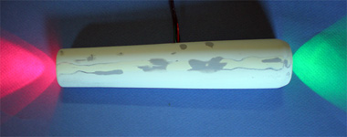
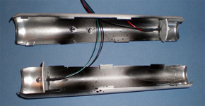
I've spent some evening time drilling out sensor and light ports on the main hull. I decided to begin actual construction with one of the warp nacelles. The disc that the LEDs are mounted to are made from scrap plastic with aluminum foil attached to the lit side with rubber cement. The insides of the nacelles were first painted with Krylon gloss black then with Alclad chrome. Once the nacelle halves had been glued together I filled the rather nasty seam with Milliput, sanded that then followed with two applications of Mr. Surfacer 500 to finish off the small holes. There are several rough spots in the exterior surface of the main parts that needed to be filled with Mr. Surfacer also. Soon the aft fitting will be attached but the nose glazing will be left off until after painting.
Now the wing sections are cleaned up and test fit. I attached the upper wing surface to the nacelle first to get a good mating surface. I'll most likely run a couple pieces of brass channel inside the wing as stiffeners but it seems pretty solid as is. The lower hull has had several bulkheads installed to add strength there. These were done in sections paying careful attention to the hull contours so as to not cause any warpage. Now the lower hull is very solid and the original shape has not been disturbed. Primary electronics will be placed in that central area just aft of the lower hull center point. I came across a stash of bamboo
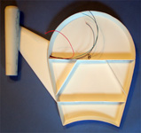
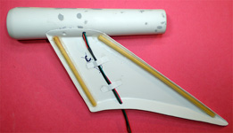
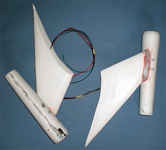
skewers in the studio and figured what the heck. I sawed these to length and fixed them in place with silicon caulk. Once that had cured overnight I was able to close up the wings. I used Bondo glazing material to fill the larger gaps. This is my first experience using this product and I am very pleased with the results. I used Mr. Surfacer 1000 as my final treatment to fill any small imperfections in the Bondo hence the various colors of fill material. Note all the little dimples of gray filler scattered about the surface, these are small fills needed to remedy small vacuforming errors.
Now back to the space craft's hull. I'm not adhering closely to the original 'Balance of Terror' episode. If I was this would be overall non-descriptive gray and have no lighting at all. When originally researching this project I ran across a build that Bill Lehner did where he installed impulse engines in the aft hull and I really liked the idea so that is being incorporated into my build. This next shot shows the process of marking off the impulse engines and opening them up. 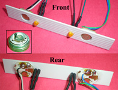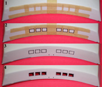 These are only rough cut right now and will be fine tuned as the translucent panels are installed. Also we have the light panel that will mount facing the translucent panels in the hull. The large round printed panels are stripped down belly button lights and the LEDs are red/orange diffuse LEDs. The belly button lights flash red and green at a pretty good pace and the LEDs will act as fill-in light. The final effect is that the impulse panels will have a slight flicker to them making in look as if they are in use. The Belly Button lights are something I found on E-Bay and are pretty handy for flashing or rippling lighting effects in models and are cheap.
Construction Update 9/14/09
I'm also working on the lenses for the sensor bands and inspection ports. Here I am using .04 fiber optic strands superglued in place. Each piece is cut flush with the exterior then shaved with a razor. Inside it is cut off short and is a little sloppier looking but as you can see from panel #5 they do the job and illuminate just fine.
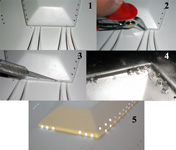
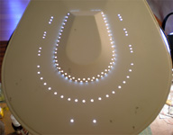
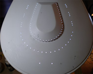
After several evenings of working on this I have completed installation of the fiber optics for the upper sensors arrays. There are lots of these little buggers and now I have to worry about masking them and adding the frames around each one -- yippee! Here is a light test with surrounding studio lights on then off. Remember, you can click on any of these small images within this article to view larger pictures.
I have considered a couple things to mask off the sensor and inspection ports. My first thought was to try and use the centers from the vinyl frames included with the kit as masks but am worried that may leave a fine white ring around each lens. Next I considered punching masking tape pieces for each one but life is too short for that. Now I am considering white mask, a liquid vinyl masking agent that could be applied with a toothpick to each lens then picked off later. Will have to test this with some Alclad and see how it reacts. The white mask is looking to be the easiest if it actually works. To test this idea I drilled three holes in a piece of scrap plastic, mounted three pieces of fiber-optic material then placed a very small spot of liquid mask on each and let it dry. Then I painted the scrap just as I would the model using a base coat of Krylon Black followed by two coats of Alclad aluminum. Once dry the masking material was picked off with tweezers and the ports were inspected. When using a magnifying glass I can see a very fine ring of black around the port but with the naked eye they look pretty good. It was around this time that Scott from AW Studios suggested that I simply leave the portion of the optical strand long on the exterior, paint the model then cut off the excess strand after all the finish work is done. Sounds like a good idea but I am too far past that point to implement the idea.
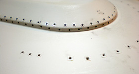
Next I am placing the little vinyl frames that came with the kit and oh so many frames there are. The hull had frames molded in place but they were inconsistent and ended up getting sanded off. The kit includes a set of vinyl frames to replace them which I spent two days placing on the upper hull, still need to do the lower hull.
Well, I’m tired of working on this aspect of the build right now so I’m heading back to the improvised impulse engines. The first thing I did was take some clear acetate sheet and airbrushed it with Alclad clear red on what would become the inside surface. Next I cut a thin strip the same width as the openings I had cut earlier in the hull. The strip was into short lengths and each hull opening was filed smooth to fit the insert.
Once all four were in place and secured with clear parts cement I airbrushed the interior with yet another coat of clear red then with a heavy coat of Micro-Flat. It was time to test the light board. I was not completely thrilled with the light output and the flicker effect so added a third Belly Button light in the middle of the board and two more steady LEDs on the outside ends of the board. Now the board could be secured and to prevent red light bleeding into the area of the hull sensors I built a quick box around the board from scrap plastic. Click here for a video of the engine test run. I have simply placed the upper hull in place for the test and to verify that there is no red light leak to other areas of the ship.
11/27/2009
Well that certainly was a bit of a long pause. Sometimes you can lose your motivation on a build or simply get stuck and that is where I have been. Until my motivation for this build returned I spent some time on other kits but now I’m back. I have done a few things here and there over the last couple months on this so let me bring you up to date. It took me several weeks to find the LEDs that I wanted for the interior. Most LEDs that you find are 25 and 30 degree viewable light which would have meant placing one LED for every two or three lit ports. After some searching I found some 130 degree high output LEDs and picked up a hundred of them for the workbench. These were installed in series around the interior of the model first being tacked in place with superglue then being fully secured with silicon caulk. You have to be very, very careful when using silicon that you do not get any on a surface you want to paint later because silicon doesn’t paint for crap. I also built some printed circuit boards for the plasma weapon with the purpose of dimly lighting two low output red LEDs then strobing a central high output LED once then allowing the dim units to fade out. I’m not going to get into the whole aspect of building PC boards because that could take all day. I did spend about two weeks just designing, printing, etching and testing boards until I was happy. I also modified the clear weapon lens using it as a master to make an RTV mold then placed three LEDs into the mold and poured clear resin.
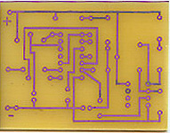
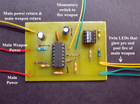
 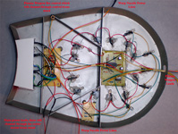
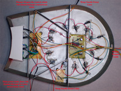
You may click on the second, third and forth images to view larger pictures
The next hurdle was creating a display base with power supple and establishing fire control systems. I drilled out a thin brass sheet, inserted a brass rod and soldered it in place along with a couple stiffeners and a common power return wire. This was secured to the inner floor of the hull with a large amount of silicon caulk and left to cure overnight. Next I removed the plastic from the contact point in the lower hull and slide a slightly smaller brass tube into the first. 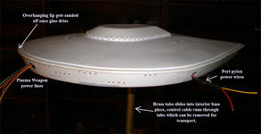
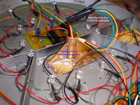
This will complete the circuit for the common return and act as the display base. Inside the brass tube is a multi-plug salvaged from an R/C car which carries the fire control and main power wires. All of this unplugs and allows the base to be removed for transport.
At long last I am ready to close up the hull. While holding the two pieces together I applied lots of Tenax 7R to the seam and applied some pressure while it set up. Once the glue was dry I could start sanding off the overhanging lip and get ready to attach the warp pylons.
11/30/2009
It’s been a busy holiday weekend and I even managed to slip in a few hours on this project. Most of the work now is pretty mundane with seam filling and sanding. I used my Dremel with a large sanding drum to remove most of the lip material then followed that with some hand sanding with 340 grit wet/dry. The engine pylons were mounted using liberal amounts of five minute epoxy which gave me plenty of time to make sure they were properly aligned. Large gaps were filled with Bondo automotive body glazing, sanded then treated with Mr. Surfacer 500 to fill minor imperfections. While putty was curing I spent a few hours at the drafting table laying out the basics for my paint masks and can see right now that it will probably take me a couple months to paint this thing – more on that as I get into the actual process. For now though here are some nice shots of the model all lit up and the studio lighting turned down/off.
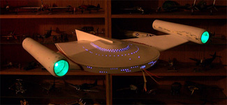
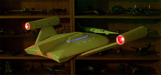
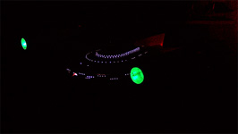
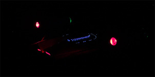
You may click on these to view larger pictures
12/14/09
Over the last several days I have been trapped in a loop of PSR (Putty, Sand, Repeat). It seemed like every time I filled and sanded a seam line once done I would find another small imperfection and with a metal finish planned for this each imperfection would stand right out. Last night I sanded my last seam repair and feel it is safe to proceed. The plasma weapon is installed next. All six of the power and return lines are soldered in place and covered with heat shrink tubing then the lens is superglued in place. 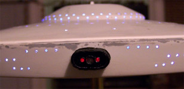
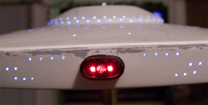
All areas of the weapon face are painted black with the exception of the three lens faces. Later this will get another coat of black then some exterior steel but now it is time to test fire the weapon. To explain what you are seeing in these two still frames I need to first refresh your memory as to the weapon’s firing sequence. When the fire sequence is activated two lower output LEDs on each side of the main lens ramp up over about three seconds then the center LED, a very high output unit, will pulse. Now the outer LEDs ramp down over about three seconds and the weapon is now ready to fire again. The first image to the left shows the outer lenses ramping up and the next picture show the weapon either just as its firing or just after. It’s pretty tough to catch that strobe with a still frame camera.
|
|


{kind=link}
{kind=link}
{kind=link}
{kind=link}
{kind=link}
{kind=link}
{kind=link}
{kind=link}
{kind=link}
{kind=link}
{kind=link}
{kind=link}
{kind=link}
{kind=link}
{kind=link}
{kind=link}
{kind=link}
{kind=link}
{kind=link}
{kind=link}
{kind=link}
{kind=link}